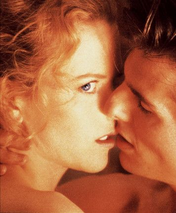

Ojos bien cerrados
Eyes Wide Shut (en Hispanoamérica, Ojos bien cerrados) es una película de 1999 dirigida por Stanley Kubrick y protagonizada por Tom Cruise y Nicole Kidman. Fue el decimotercer y último largometraje de Kubrick, así como su obra póstuma, ya que el director murió pocos días antes de poder mostrar el montaje definitivo a Warner Bros. Está basada en la novela Relato soñado, de Arthur Schnitzler, y su guion fue escrito por el mismo Kubrick y Frederic Raphael.
El rodaje fue largo y accidentado, lo que dio lugar a múltiples rumores, entre ellos el de un desgaste psicológico de Tom Cruise y Nicole Kidman, que en parte pudo acelerar su crisis matrimonial. Jennifer Jason Leigh y Harvey Keitel actuaban originalmente en el papel de Marion Nathason y Victor Ziegler. Después de haber grabado algunas escenas, Keitel abandonó la producción por otro proyecto y Leigh fue despedida. Fueron sustituidos por Marie Richardson y Sydney Pollack, respectivamente. También se rumoreó que el fichaje de Pollack fue un intento de la productora por controlar un rodaje que se estaba escapando meteóricamente en tiempo y dinero.
También fue controvertida la inclusión de escenas eróticas, principalmente las de la orgía en una mansión. Algunos planos de desnudo integral amenazaban con dar a la película la calificación «X» en Estados Unidos, lo que implicaba un previsible fracaso comercial. Kubrick se resistió a autocensurarse, si bien finalmente se distribuyeron dos versiones de la película: la destinada a EE. UU. era algo más breve en las escenas de sexo y se recurrió a trucos infográficos (interponiendo siluetas humanas) para tapar ciertos desnudos
De hecho, los rumores y el anecdotario que rodearon al rodaje acapararon más interés que la propia película, que, salvo en algunos sectores, fue acogida con más tibieza que entusiasmo. Pero más allá de rumores y anécdotas, Kubrick estaba «eufórico» con su pareja de actores por «su energía y su profesionalidad», que lograban transmitír a todo el equipo.
1968